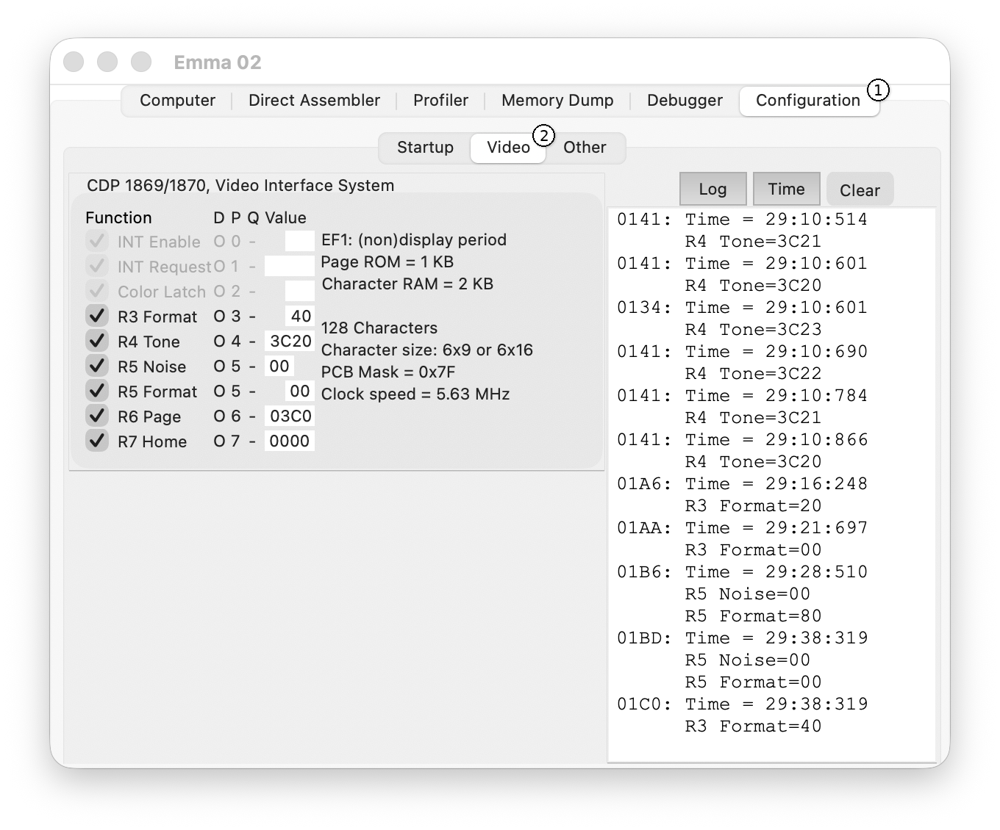
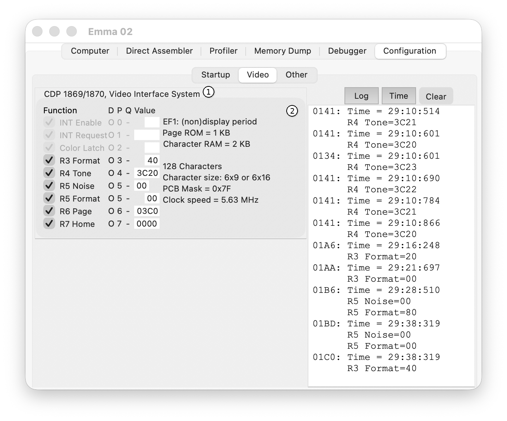
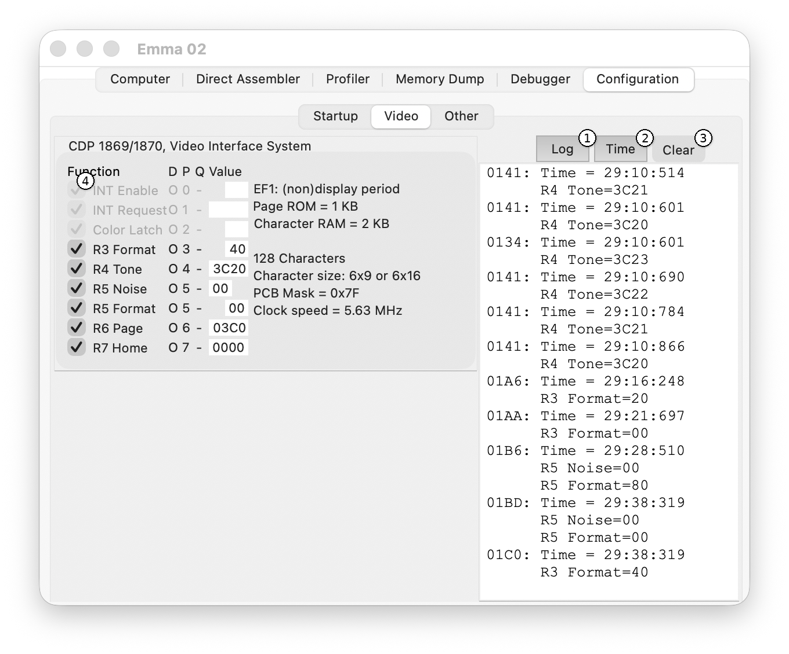

Video Configurations
The Video sub-tab of the Configuration tab provides video configuration information for the emulated computer.
The main elements of the Video sub-tab are shown in the screenshot below.

To open this tab, select the Configuration tab (1) and then the Video sub-tab (2).
I/O
The I/O section shows and controls I/O values and status.
The I/O controls are shown in the screenshot below.

- (1) Video Chip field - the configured video chip.
- (2) I/O field - shows I/O values and configuration.
Where applicable, the I/O definition may include heading:
- Function - description of the function.
- D - Direction (I = input, O = output, B = both; not used in screenshot).
- P - Port number or Polarity (not used in screenshot).
- Q - Q value (Q = 0, Q = 1).
- Value - value.
- R - Register number (not used in screenshot).
- Address - address (not used in screenshot).
The currently defined Video configurations:
- CDP1861, Video Display Controller - Pixie
- CDP1862, Color Generator Controller
- CDP1864, Color TV Interface
- CDP1869/1870, Video Interface System
- Coin Arcade Video Display Controller
- CRT8002 Video Display Attribute Controller
- Fred Video Display Controller
- Intel 8275 Programmable CRT Controller
- MC6845 CRT Controller
- MC6847 Video Display Generator
- SCN2672 Programmable Video Timing Controller
- Studio IV Video Display Controller
- Texas Instruments SN76430N Video Generator
- TMS9918 Video Display Processor
- Vip2K Video Display Controller
Only I/O information and controls are shown for the configured video chips.
Log
The Log section controls logging of I/O events.
The Log controls are shown in the screenshot below.

- (1) Log button - switch log on/off (default off).
- (2) Time button - switch time logging on/off (default on).
- (3) Clear button - clear log window.
- (4) I/O checkbox - enable logging for the specified I/O.